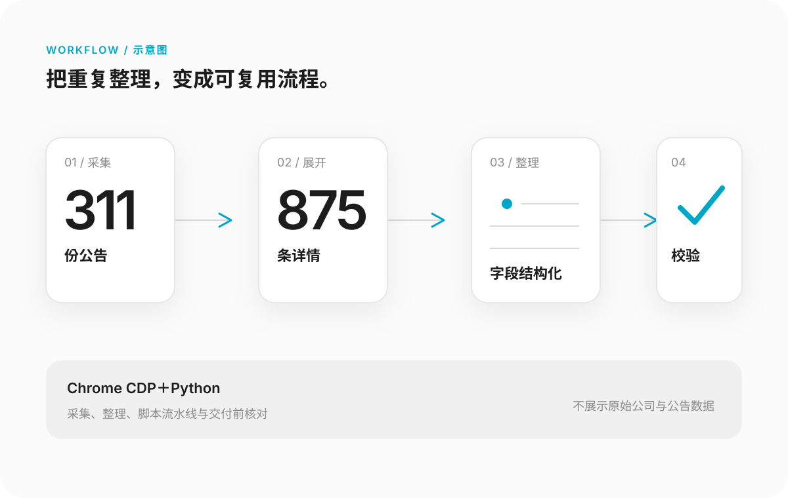

CASE 02 / AUTOMATION
公告数据
自动化

01 / 问题
重复采集容易耗时，也更容易漏项。
公告和详情分散，手工复制不仅重复，还需要额外检查字段、数量与格式。任务重点不是单纯“抓到数据”，而是形成可复用、可核对的整理流程。
02 / 拆解
把任务拆成可以分别验收的小块。
- 先确认公告范围与目标字段，避免无目的扩大采集。
- 使用 Chrome CDP 获取公告并展开详情，保持来源对应关系。
- 使用 Python 完成结构化、整理与格式处理。
- 将采集、展开、整理和校验拆成可复用步骤。
03 / 结果
311 份公告，875 条详情。
完成公告及详情的采集整理，形成可复用脚本流水线。数字来自真实项目记录，不额外虚构准确率、节省时长或商业收益。
04 / 核对
工具输出不直接等于交付。
- 检查公告与详情数量是否对应。
- 核对字段完整性、事实与关键数字。
- 检查输出格式，减少后续手工返工。
- 公开案例只展示流程，不暴露原始公司与公告数据。